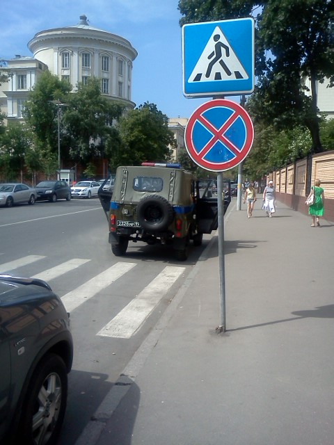
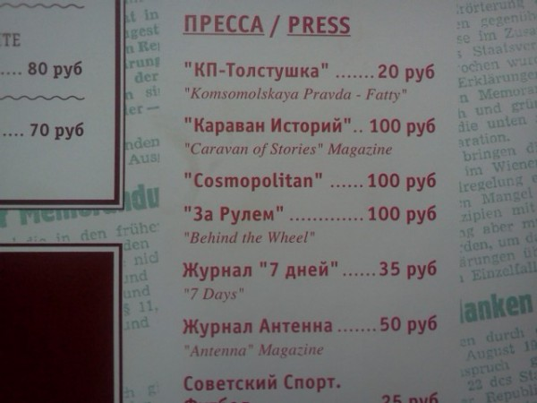
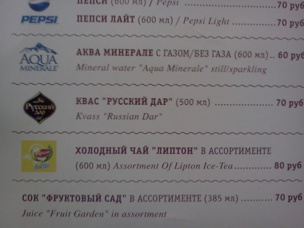

Так сложились обстоятельства, что вернувшись в половине второго вечера в прошлый вторник с Алтая, (рассказ о поездке на который я начал вчера) уже в 7 утра я сидел в серебристом аэробусе «Юрий Гагарин» компании Аэрофлот, который летел в столицу нашей родины — город в разной степени герой — Москва.
Писать о том, как я побывал в Москве — всё равно что признаться в провинциальщине, поэтому — пишу.
Последний раз в Москве я был в 1989 год. Другими словами в современной Москве я не был ни разу. В этот раз визит в Москву планировался довольно краткосрочный (следующим утром я уже спускался по трапу из самолёта им. А.Дайнеко всё той же авиакомпании), поэтому данный пост никак не может служить путеводителем у кузбасских туристов. Ни Мавзолея, ни рублёво-успенского шоссе посетить я не успел.
Москва — большой Новосибирск. Такая же рекламно зашумленная. Неприятно рекламно зашумленная. Кемерово, в сравнении с Москвой, смотрится как Яровое, в сравнении с Кемерово (вам обязательно нужно съездить в г. Яровое).
В Москве спят прямо на улицах бомжи. Не как у нас под кленами на Соборной, а прямо на площади трёх вокзалов. Это отталкивает от Москвы.
В Москве много дорогих машин. В Москве конечно, вообще много машин, но процент дорогих высок. До этого у меня были планы купить в кредит хаммер, чтобы выглядеть посерьезней. На прошлой неделе я отказался.
Парковаться в Москве негде. Даже сотрудники правоохранительных органов вынуждены нарушать ПДД, что для Кемерова просто невероятно.

Ещё посидел в стейк-хаусе Goodman. Водка «Русский стандарт», как всегда понравилась, а «Рибай» стейк GOODMAN, 400 г, Австралия. 120 дней зернового откорма. Говяжий стейк из реберной части, особенно сочный и ароматный. Рекомендуемая степень прожарки - medium. Для стейка прожарки medium-well рекомендуем заказать наиболее мраморный кусок мяса 1380 р.— не очень. Я вообще как-то не очень к мясу.
В аэропорт ехали на аэроэкспрессе. Сложные переговоры были позади, я открыл прайс.
Постарайтесь не смотреть на следующую фотографию и написать по английски «КП-Толстушка.» У меня получается «KP Tolstushka» и иначе никак. В аэроэкспрессе — иначе.

Последний пример (их много, но глупо, если пост будет состоять лишь из фотографий прайс-листа аэроэкспресса)

Перевод названия кваса «Русский дар» окончательно, с ног до головы выдает место где мы находимся. Это место не Кузбасская Торгово-Промышленная палата, где всё любят писать на всякий случай на двух языках. Это — наша Родина.
Получилось, конечно, скомкано, но ведь и в Москве я был всего 15 часов, с багажом в виде сотового телефона.
p.s. Когда-то в детстве, я целый года был по собственной инициативе подписан на газету «Moscow news». Разумеется на английском языке. По посёлку Ижморскому у меня нет сомнений, просто интересно — кто-нибудь ещё выписывал эту газету в Кемеровской области вообще?